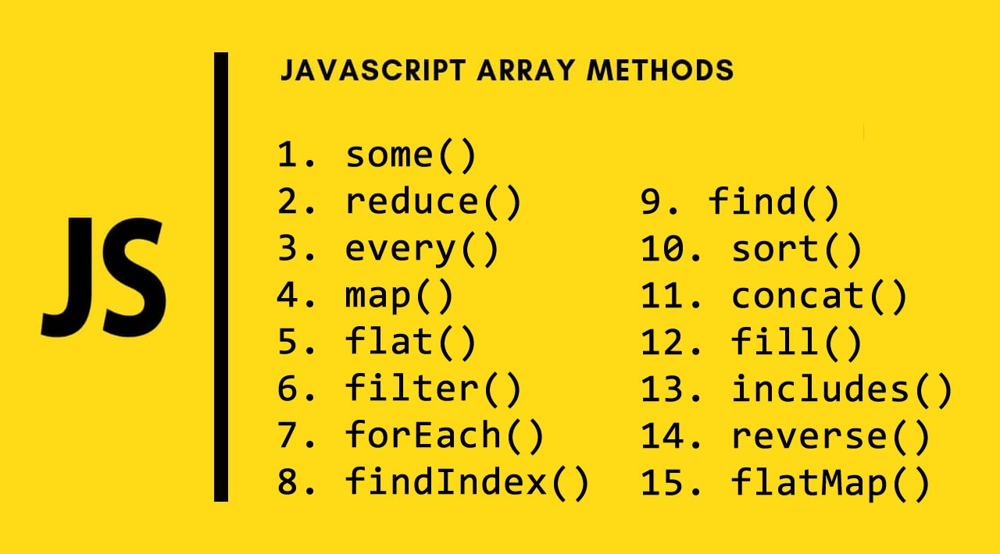

Masīvi
Masīva izmantošanas priekšrocības:
- dati glabājas vienuviet, tādēļ tos ir vienkāršāk rediģēt un papildināt
- datus var apstrādāt, izmantojot ciklu, līdz ar to iespējams veidot īsāku kodu
Jāatceras, ka:
- vienā masīvā var glabāt tikai viena tipa datus
- masīva pirmais elements ar numuru nulle